scores <- c(50, 60, 70)
mean(scores)
#> [1] 60Description and Basic Inference with R
NoteChapter overview
This chapter uses R to connect observations, statistical summaries and uncertainty. We describe distributions and groups, then relationships, and use repeated samples to see how an estimator varies. Intervals and tests connect an estimate with its standard error and a reference distribution. Short R examples sit beside the equations, figures and tables whose meaning they illustrate. The central question remains what the records represent and what supports the interpretation of the result.
Three students scored 50, 60 and 70 points. Their mean is \((50+60+70)/3=60\) points. R gives the same result:
The result describes the three recorded scores. Using it to estimate another group’s mean would add a target and an account of how these observations inform that target. The calculation is simple; deciding what it answers still depends on the study.
Read and Prepare Observations
A calculation that can be checked
R is the programming language and statistical computing platform used in this chapter. It performs calculations, fits statistical models and draws graphs (R Core Team, 2025). A saved R script records the commands behind an answer so that the calculation can be checked and rerun. RStudio is an integrated development environment (IDE): a workspace that brings together a code editor, the R Console, plots and Help. We write and run commands in RStudio; R carries out the computations.
Quarto is software for professional publication. It brings prose, equations, R code, computed results, tables, figures and references together in one source document, which can be rendered as an HTML page, a typeset PDF, a Word document or a presentation (Posit Software, PBC, 2026). For example, we can write a report in RStudio that explains the three quiz scores, asks R to calculate their mean, and uses Quarto to place the answer beside its explanation. When the scores change, rendering the document again can update the calculation and the report together. These three tools connect observations to a reported result. A reproducible computation can still answer the wrong question, so the records and their meaning come first.
A data frame is a table of cases and variables
A data frame is a table whose columns can hold different types of values. The entry \(x_{ij}\) is case \(i\)’s value on variable \(j\); text and category columns can sit beside numbers. Its layout should make the observational unit clear. In the next table a row represents one student; the columns give an identifier, a baseline score and a follow-up score, and student B’s follow-up score is unavailable. A row can instead record one person on one occasion or under one condition, so count the represented units as well as the rows.
small <- data.frame(student = c("A", "B", "C"),
baseline = c(50, 60, 70), followup = c(55, NA, 78))| Student | Baseline | Follow-up |
|---|---|---|
| A | 50 | 55 |
| B | 60 | NA |
| C | 70 | 78 |
NA marks an unavailable value, not an observed zero. The available follow-up mean is \((55+78)/2=66.5\) points, a description of two recorded scores:
mean(small$followup, na.rm = TRUE)
#> [1] 66.5Treating B’s missing score as zero would answer a different question with an invented measurement. A change needs both measurements of the same student, so only A and C contribute:
both <- complete.cases(small)
mean(small$followup[both] - small$baseline[both])
#> [1] 6.5Their changes, 5 and 8 points, average 6.5 points. Subtracting the two separately available means happens to give \(66.5-60=6.5\) as well, but the baseline mean uses three students and the follow-up mean two. The agreement is a coincidence of these numbers; Exercise 3 changes one score and the two calculations part. The measurement definition and codebook must also support any decision to treat a recorded zero as an unavailable value.
The records behind a summary
The airquality documentation describes daily New York measurements from May to September 1973. A row is a day. Ozone is ozone in parts per billion (ppb), Wind wind speed in miles per hour, Temp maximum temperature in degrees Fahrenheit, and Solar.R solar radiation in Langleys. Month and Day identify dates within that period. There are 153 days and six variables, but ozone is recorded on only 116 days and missing on 37. The available ozone values are:
air <- airquality
ozone <- na.omit(air$Ozone)Their mean describes 116 days. The percentage of days with an ozone measurement instead uses all 153 as its denominator:
100 * length(ozone) / nrow(air)
#> [1] 75.81699346Thus \(100(116/153)=75.817\%\) of the days have an ozone measurement. Every summary has a denominator, and naming it is part of the result. Restricting the records to July changes the cases: 26 recorded days have mean ozone 59.1154 ppb. Converting Fahrenheit to Celsius instead keeps the same 153 days and changes their units; the mean becomes 25.4902 degrees Celsius. Naming month codes as categories changes how their labels are read, without changing the observations. A relationship needs both measurements: ozone and solar radiation are jointly recorded on 111 days, so their relationship describes those 111 days.
The 153 days are a historical record for one city and period. Complete records define the cases of a calculation; they do not establish random sampling. Treating these records as evidence about other years, unrecorded days or all New York summer days adds assumptions about selection, time and measurement, which Section 4 makes explicit.
Describe Distributions and Groups
Shape, centre, and spread
A distribution shows how the values are arranged. Before reducing the 116 ozone measurements to numbers, look at their shape. A histogram groups nearby values into intervals and counts the observations in each interval; a boxplot compresses their location and spread.
hist(ozone, breaks = seq(0, 180, by = 20), xlab = "Ozone (ppb)", main = "")
boxplot(ozone, horizontal = TRUE, xlab = "Ozone (ppb)")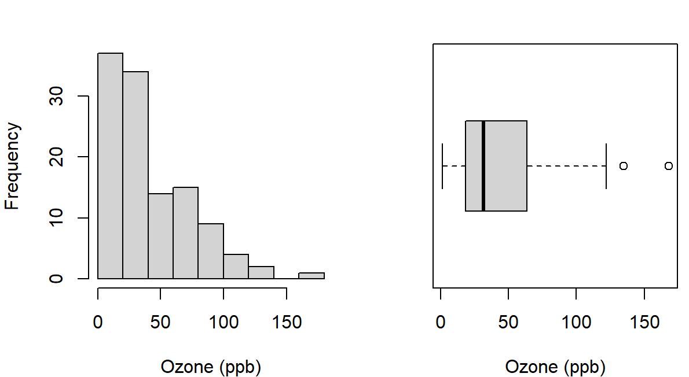
The histogram uses 20-ppb intervals. Changing their boundaries can reveal or conceal detail while the observations stay the same. Most days have lower values, with a long right tail reaching 168 ppb. The boxplot marks the median and a box between its hinges; each whisker reaches the most distant value within 1.5 box lengths of its hinge. Points beyond the whiskers invite examination, and the display alone does not justify removing them.
The mean and median describe location; the variance, SD and IQR describe spread. For observations \(x_1,\ldots,x_n\),
\[ \bar x=\frac{1}{n}\sum_{i=1}^{n}x_i,\qquad s^2=\frac{\sum_{i=1}^{n}(x_i-\bar x)^2}{n-1},\qquad s=\sqrt{s^2},\qquad IQR=Q_3-Q_1. \]
The variance measures each value’s deviation from the mean, squares the deviations so that positive and negative ones cannot cancel, adds them and divides by \(n-1\); the square root returns the SD to the original units. For the three scores the deviations from 60 are \(-10\), 0 and 10, their squares sum to 200, and \(s^2=200/2=100\) squared points, so \(s=10\) points. The divisor \(n-1\) reflects that deviations around a sample mean sum to zero, so once \(n-1\) of them are known the last is determined; under independent sampling from a common distribution it also makes \(s^2\) unbiased for the process variance, a property that Section 4.4 shows by repetition. For ozone, one call returns the summaries:
c(mean = mean(ozone), median = median(ozone), SD = sd(ozone),
IQR = IQR(ozone))
#> mean median SD IQR
#> 42.12931034 31.50000000 32.98788451 45.25000000The mean, 42.1293 ppb, exceeds the median, 31.5 ppb, as the long right tail leads us to expect. The SD, 32.9879 ppb, describes spread around the mean; the quartiles 18.00 and 63.25 ppb give an IQR of 45.25 ppb for the middle half of the ordered values; and the range is 1 to 168 ppb. Each summary keeps a different feature, which Table 2 shows with four invented sets of three scores.
| Scores | Mean | Median | SD |
|---|---|---|---|
| 50, 60, 70 | 60 | 60 | 10.0000 |
| 50, 60, 100 | 70 | 60 | 26.4575 |
| 58, 60, 62 | 60 | 60 | 2.0000 |
| 40, 60, 80 | 60 | 60 | 20.0000 |
score <- c(50, 60, 100)
c(mean(score), median(score), sd(score))Read the rows in pairs. Replacing 70 by 100 moves the mean from 60 to 70 and raises the SD from 10 to 26.4575, while the median stays at 60, still the middle ordered value: the median resists one extreme value, which does not make either centre universally preferable. The last two sets balance at the same centre and differ tenfold in spread, so a report of equal means would conceal what distinguishes them. This is why a group comparison keeps counts, centres and spreads together.
Quartiles also depend on a stated rule. R’s default, type = 7, places the quartile at position \(h=1+(n-1)p\) among the ordered values and interpolates between neighbours. Another familiar rule takes the medians of the two halves. Table 3 applies both rules to the values 1, 3, 3 and 5.
| Rule | \(Q_1\) | \(Q_3\) | IQR |
|---|---|---|---|
| Medians of the two halves | 2.0 | 4.0 | 2 |
R’s default, type = 7 |
2.5 | 3.5 | 1 |
quantile(c(1, 3, 3, 5), probs = c(.25, .75))The observations are the same; the rules differ. Type 7 uses positions 1.75 and 3.25, so each quartile moves part of the way between neighbouring values, and its IQR is half the other value. A reproducible report names the rule when it affects the answer, and a boxplot’s hinges need not equal either rule’s quartiles.
Group summaries and weighted means
For the ozone records, the month codes identify groups of days. A factor stores such categories with named levels in a stated order, and tapply() applies a function within each level:
air_observed <- na.omit(air[c("Ozone", "Month")])
air_observed$month <- factor(air_observed$Month, labels = month.name[5:9])
tapply(air_observed$Ozone, air_observed$month, mean)
#> May June July August September
#> 23.61538462 29.44444444 59.11538462 59.96153846 31.44827586A group mean needs its count and spread beside it, which Table 4 supplies.
| Month | Recorded days | Mean ozone | SD ozone |
|---|---|---|---|
| May | 26 | 23.6154 | 22.2244 |
| June | 9 | 29.4444 | 18.2079 |
| July | 26 | 59.1154 | 31.6358 |
| August | 26 | 59.9615 | 39.6812 |
| September | 29 | 31.4483 | 24.1418 |
June’s mean describes only nine recorded days, and its count matters when we place it among the other monthly means.
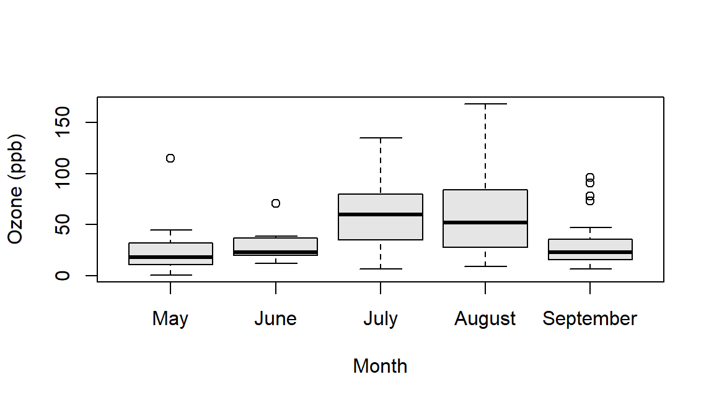
boxplot(Ozone ~ month, data = air_observed)The boxes show the higher centres in July and August together with the spread within each month, which the monthly means alone cannot show. These differences summarize the record; they do not by themselves isolate an effect of season from other changes over the period.
The grand mean over individual observations weights each group mean by its count:
\[ \bar x=\frac{\sum_g n_g\bar x_g}{\sum_g n_g}. \]
The rule applied to the five monthly ozone means returns 42.1293 ppb, the mean of all 116 recorded days. For June and July alone, with 9 and 26 recorded days, the recorded-day mean is 51.4857 ppb and the equal-month mean 44.2799 ppb. Neither is the correct one in general: the question decides whether days or months receive equal weight.
Counts, proportions, and a binary indicator
The mtcars documentation describes 32 car-model records from the 1974 Motor Trend magazine, covering 1973–1974 models. Each row is a car model. The variable mpg gives fuel economy in miles per US gallon, while am codes automatic transmission as 0 and manual transmission as 1. Use 20 mpg as a teaching threshold, label the transmission categories, and form their two-way table:
cars <- mtcars
cars$transmission <- factor(cars$am, levels = c(0, 1),
labels = c("Automatic", "Manual"))
tab <- table(cars$transmission, cars$mpg >= 20)
tab
#>
#> FALSE TRUE
#> Automatic 15 4
#> Manual 3 10
100 * prop.table(tab, margin = 1)
#>
#> FALSE TRUE
#> Automatic 78.94736842 21.05263158
#> Manual 23.07692308 76.92307692The table counts 15 automatic models below the threshold and 4 at or above it, against 3 and 10 manual models. prop.table() turns counts into proportions; margin = 1 makes each row its own denominator, and multiplying by 100 gives percentages. One table answers several questions, and each question has its own denominator (Table 5).
| Question | Denominator | Percentage |
|---|---|---|
| Automatic models meeting the threshold | 19 automatic models | 21.0526 |
| Manual models meeting the threshold | 13 manual models | 76.9231 |
| Threshold-meeting models that are manual | 14 threshold-meeting models | 71.4286 |
The first two rows condition on transmission and differ by 55.8704 percentage points. The third reverses the condition: among the 14 models that meet the threshold, 71.4286% are manual. “Meeting the threshold among manual models” and “manual among threshold-meeting models” answer different questions, and naming the denominator keeps them apart. The percentages describe an association among the 32 recorded models, whose transmission groups also differ in weight and engine. Neither direction of conditioning identifies what changing a transmission would do.
A binary indicator has one further property: its mean is the proportion coded 1. Of the 32 models, 14 meet the threshold, so the indicator cars$mpg >= 20 has mean \(14/32=.4375\). The 0/1 am variable is such an indicator, and Section 3.3 uses it in a point-biserial correlation; Section 5.5 uses a 0/1 indicator to describe interval coverage.
Transformations and the Normal model
A linear transformation changes location and units predictably. If \(y_i=a+bx_i\), the mean becomes \(a+b\bar x\), the variance \(b^2s^2\) and the SD \(|b|s\). The Celsius conversion has \(a=-32(5/9)\) and \(b=5/9\), so the mean temperature of 77.8824 and SD of 9.4653 degrees Fahrenheit become 25.4902 and 5.2585 degrees Celsius: subtracting the constant moves the mean only, and the factor \(5/9\) rescales both.
temp <- (air$Temp - 32) * 5 / 9
c(mean(temp), sd(temp))A standardized value measures distance from the mean in SD units. For an ozone reading of 100 ppb,
\[ z_i=\frac{x_i-\bar x}{s},\qquad z_{100\text{ ppb}}=\frac{100-42.1293}{32.9879}=1.7543. \]
(100 - mean(ozone)) / sd(ozone)Standardizing changes location and scale while preserving shape: right-skewed ozone stays right-skewed. This individual \(z\) divides by the observations’ SD; Section 5’s statistic for a mean divides by an SE instead. R names distribution functions by four prefixes: d gives a density height or a probability mass, p a cumulative probability, q a quantile and r generated observations. Thus pnorm() is the Normal family’s cumulative-probability function, and lower.tail = FALSE asks for the probability above the value.
pnorm(100, mean = mean(ozone), sd = sd(ozone), lower.tail = FALSE)
#> [1] 0.03968944406A Normal model with the ozone mean and SD puts probability .0397 above 100 ppb. Table 6 sets this and one more model probability beside what the 116 recorded days show.
| Event for one recorded day | Normal model | Observed |
|---|---|---|
| Ozone of at least 100 ppb | .0397 | .0603 |
| Ozone within one SD of the mean | .6827 | .7241 |
Seven of the 116 days reach 100 ppb, a larger share than the model gives, and more days lie within one SD of the mean than the model expects. The model misses the long right tail and the concentration of low values. A function evaluates the model it is given; it does not certify that the model describes the data, and the familiar 68–95–99.7 rule belongs to the Normal model, not to every standardized dataset.
For a separate, stipulated score model \(X\sim N(100,15^2)\), on the scale used by intelligence scores such as the WISC, a probability for a range is a difference of cumulative probabilities, and qnorm() reverses the question by returning the value at a stated cumulative probability:
pnorm(120, mean = 100, sd = 15) - pnorm(100, mean = 100, sd = 15)
#> [1] 0.4087887803
qnorm(c(.025, .975), mean = 100, sd = 15)
#> [1] 70.60054023 129.39945977The probability of a score between 100 and 120 is .4088. The central 95% of scores under the model lies between 70.6005 and 129.3995; these limits describe individual scores under the model, not a confidence interval for an unknown mean. The same functions give .5000 below 100 and .0038 above 140.
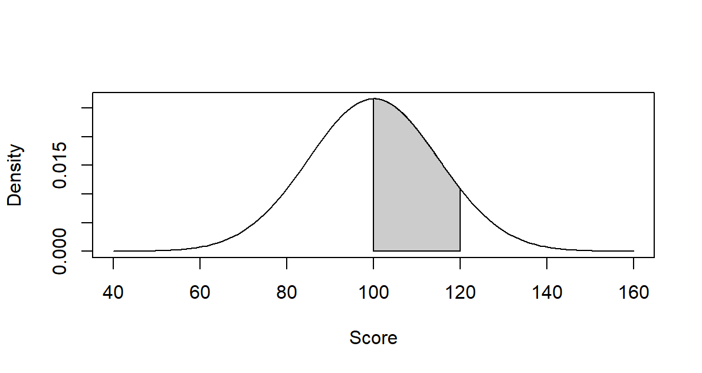
curve(dnorm(x, mean = 100, sd = 15), from = 40, to = 160)The curve’s height is a density. Probability belongs to an area, such as the shaded region in Figure 3, rather than to the height at one exact score.
A compact distribution catalogue in R
The binomial model shows how the four prefixes ask different questions of one process. \(X\sim\operatorname{Binomial}(20,.3)\) counts successes in 20 independent trials with success probability .3:
c(d = dbinom(4, size = 20, prob = .3),
p = pbinom(4, size = 20, prob = .3),
q = qbinom(.95, size = 20, prob = .3))
#> d p q
#> 0.1304209744 0.2375077789 9.0000000000
set.seed(20517)
rbinom(6, size = 20, prob = .3)
#> [1] 6 8 6 3 5 6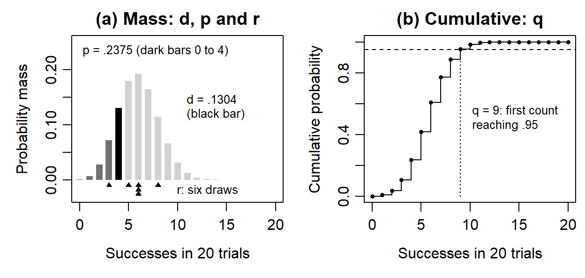
dbinom returns; the masses at 0 to 4 together (dark bars) are what pbinom returns; the triangles below the axis are the six counts from rbinom. (b) The cumulative probability first reaches .95 at 9, the value qbinom returns.
Figure 4 reads the output. The probability of exactly four successes is .1304, one bar; the probability of at most four is .2375, the sum of five bars. The .95 quantile is 9 because the cumulative probability is .8867 at 8 and .9520 at 9: for a discrete model the quantile is the first count whose cumulative probability reaches the requested level, which it need not attain exactly. The six generated values, 6, 8, 6, 3, 5 and 6, are counts from six separate sets of 20 trials; the first argument of rbinom() is the number of counts generated, whereas size = 20 is the number of trials in each. The seed makes the draws reproducible; another seed changes the draws and leaves the model probabilities unchanged.
The lookup in Table 7 gives the same vocabulary for other families. Its support states the possible values, and the parameters specify a member of each family.
| Model | Object and parameters | Base-R family |
|---|---|---|
| Bernoulli | One 0/1 response, probability \(p\) of 1 | binom, with size=1 |
| Binomial | Success count in \(m\) independent trials with common \(p\) | dbinom, pbinom, qbinom, rbinom |
| Categorical | One label among categories with stated probabilities | sample() with prob; a table of masses |
| Poisson | Nonnegative count with model mean \(\lambda\) | dpois, ppois, qpois, rpois |
| Normal | Continuous value with mean \(\mu\) and SD \(\sigma\) | dnorm, pnorm, qnorm, rnorm |
| Lognormal | Positive value whose log is Normal; parameters on the log scale | dlnorm, plnorm, qlnorm, rlnorm |
| Logistic | Continuous symmetric value with location \(\mu_L\) and positive scale \(s_L\) | dlogis, plogis, qlogis, rlogis |
| Student t | Symmetric reference distribution with specified df | dt, pt, qt, rt |
Lognormal meanlog and sdlog describe the logarithm, not the mean and SD of the positive values. Its density is right-skewed, whereas a t density is symmetric with tails heavier than the Normal density. These contrasts reflect different kinds of outcome and variation.
curve(dlnorm(x, meanlog = 0, sdlog = .8), from = .01, to = 6)
curve(dt(x, df = 5), from = -4, to = 4)Describe Relationships
The same 32 complete car-model records support this section’s plots, coefficients and matrices. These describe the recorded relationships; Section 5.6 adds inference about a process correlation.
Begin with the plotted observations
Mean comparisons group observations by a category. A relationship between two quantitative variables begins instead with pairs of values. For the 32 car models, wt measures weight in thousands of pounds and mpg fuel economy in miles per US gallon. All 32 rows record both, so the graph and every numerical description use the same rows:
plot(mtcars$wt, mtcars$mpg, pch = 16,
xlab = "Weight (thousand pounds)", ylab = "Miles per gallon")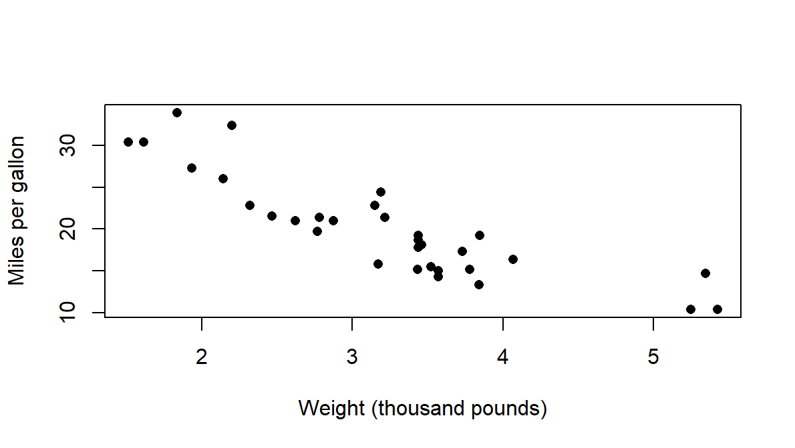
Read direction, strength and form before reducing the display to a coefficient. Heavier models generally have lower mpg. Inspect unusual observations, the range of weights, possible subgroups and changes in spread: a coefficient compresses these features, and the plot shows what that number can usefully describe.
Covariance averages the products of paired deviations. On the same \(n\) observations, sample covariance and Pearson correlation are
\[ s_{xy}=\frac{\sum_{i=1}^n(x_i-\bar x)(y_i-\bar y)}{n-1},\qquad r_{xy}=\frac{s_{xy}}{s_xs_y}. \]
A pair contributes positively when both values lie above their means or both below, and negatively when they lie on opposite sides. Covariance keeps the product of the two units; dividing by the two SDs gives a unit-free coefficient between \(-1\) and 1 for variables with nonzero spread. For \(x=(1,2,3)\) and \(y=(2,4,6)\), the deviation products sum to 4, the covariance is \(4/(3-1)=2\), and the SDs are 1 and 2, so \(r=1\): all points lie on one increasing line.
c(covariance = cov(mtcars$wt, mtcars$mpg),
r = cor(mtcars$wt, mtcars$mpg))
#> covariance r
#> -5.1166846774 -0.8676593765The car covariance is \(-5.1167\) thousand-pounds times mpg and \(r=-.8677\). Recording weight in pounds multiplies the covariance by 1,000, to \(-5116.6847\) pounds times mpg, and multiplies the weight SD by 1,000 as well, so the correlation stays \(-.8677\). Adding a constant changes neither statistic; multiplying one variable by a negative constant reverses both signs.
A small correlation need not mean little relationship. The five points \(x=(-2,-1,0,1,2)\) and \(y=x^2=(4,1,0,1,4)\) in Figure 6 follow an exact curve, yet their covariance and correlation are zero.
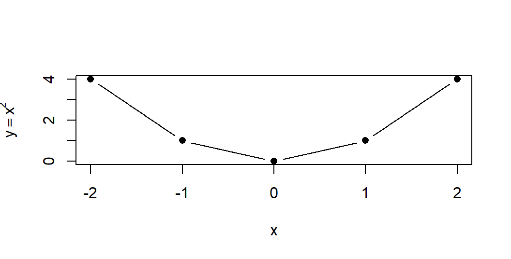
x <- -2:2
plot(x, x^2, type = "b")The cross-products at \(x\) and \(-x\) cancel by symmetry, although knowing \(x\) determines \(y\). Pearson correlation describes linear association, so “the variables are unrelated” would overstate this result.
Covariance and correlation matrices
A covariance matrix extends the pairwise calculation to several variables: its diagonal holds variances and its off-diagonal entries covariances. A correlation matrix standardizes each entry, with ones on the diagonal for variables with positive variance. Both describe one common set of rows. For fuel economy, gross horsepower (hp) and weight, all 32 rows are complete, and three lines produce both matrices.
X <- mtcars[c("mpg", "hp", "wt")]
S <- cov(X)
R <- cov2cor(S)mtcars[c("mpg", "hp", "wt")] selects three columns by name, cov() returns the covariance matrix and cov2cor() rescales it into the correlation matrix. Table 8 and Table 9 give both in the same row and column order.
| Variable | mpg | hp | wt |
|---|---|---|---|
| mpg | 36.3241 | \(-320.7321\) | \(-5.1167\) |
| hp | \(-320.7321\) | 4700.8669 | 44.1927 |
| wt | \(-5.1167\) | 44.1927 | 0.9574 |
| Variable | mpg | hp | wt |
|---|---|---|---|
| mpg | 1.0000 | \(-.7762\) | \(-.8677\) |
| hp | \(-.7762\) | 1.0000 | .6587 |
| wt | \(-.8677\) | .6587 | 1.0000 |
pairs(X)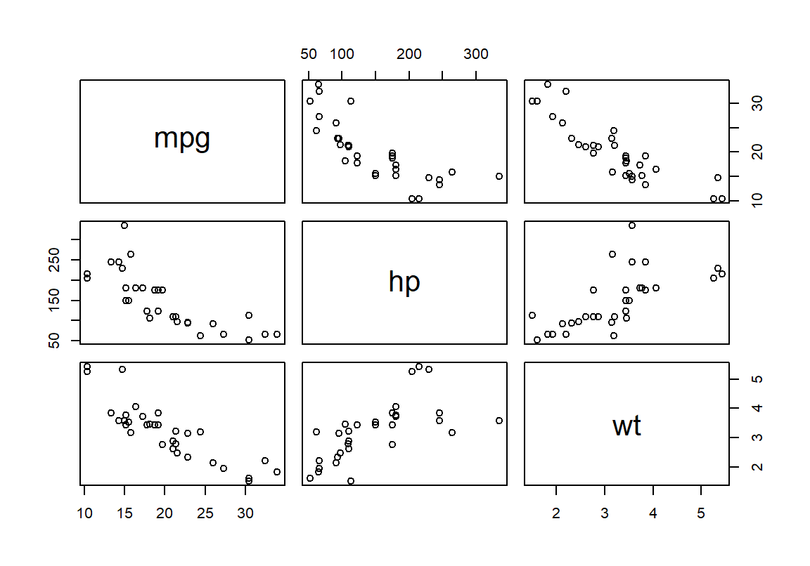
The matrix numbers summarize these clouds (Figure 7). The negative mpg–weight entry describes the descending panels; the positive horsepower–weight entry describes an ascending one. The diagonal of the numerical covariance matrix records each variable’s own spread. Curvature and unusual cases remain visible in the plotted pairs even though each matrix entry compresses its cloud to one number.
The mpg variance has squared-mpg units, and its covariance with horsepower has mpg-times-horsepower units; the correlations remove those units. If \(\mathbf D\) is the diagonal matrix of the positive sample SDs, the two conversions are
\[ \mathbf R=\mathbf D^{-1}\mathbf S\mathbf D^{-1},\qquad \mathbf S=\mathbf D\mathbf R\mathbf D. \]
d <- sqrt(diag(S))
sd_matrix <- diag(d)
sd_matrix %*% R %*% sd_matrixdiag(d) places the SDs on the diagonal of \(\mathbf D\), and %*% multiplies matrices, so the last line computes \(\mathbf{DRD}\). Correlations alone therefore cannot recover the covariance matrix: the SDs and their units are also needed. Multiplying each correlation by the corresponding pair of SDs reconstructs its covariance. A constant column has zero SD and an undefined correlation, so it must be detected before converting. Common rows matter when measurements are missing. Computing each entry from a different pairwise subset can produce a matrix that describes no single joint sample and is not positive semidefinite, so it can imply an impossible negative variance for a combination of the variables. For airquality’s ozone, solar radiation and wind, the individual recorded counts are 116, 146 and 153, but the common set contains 111 days.
Pearson, rank, and point-biserial coefficients
Pearson correlation uses the measured scales and describes linear association. Spearman correlation applies Pearson’s formula to the ranks and describes monotone association: values move consistently in one direction, even along a curve. Kendall correlation compares concordant and discordant orderings of pairs, with an adjustment for ties. For mpg and horsepower:
c(Pearson = cor(X$mpg, X$hp),
Spearman = cor(X$mpg, X$hp, method = "spearman"))
#> Pearson Spearman
#> -0.7761683718 -0.8946646457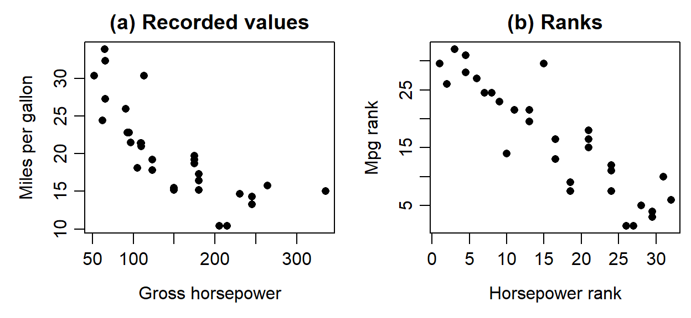
plot(rank(X$hp), rank(X$mpg))Mileage falls steeply as horsepower rises and then levels off (Figure 8). The decline is monotone but curved, so the linear coefficient, \(-.7762\), is weaker than the rank coefficient, \(-.8947\), which sees only the ordering. A point-biserial correlation is Pearson’s coefficient with one variable coded 0/1; Table 10 collects the four coefficients.
| Coefficient | What it describes | mtcars value |
|---|---|---|
| Pearson, mpg and hp | Linear association on the recorded scales | \(-.7762\) |
| Spearman, mpg and hp | Monotone association: Pearson’s coefficient on ranks | \(-.8947\) |
| Kendall, mpg and hp | Concordant minus discordant ordering of pairs, adjusted for ties | \(-.7428\) |
Point-biserial, am and mpg |
Pearson’s coefficient with manual coded 1 and automatic 0 | .5998 |
The different magnitudes do not make the largest coefficient the best description in general: the question and the plot decide which association matters. With average ranks, tied horsepower values share the average of the positions they would occupy; the rank plot and Spearman coefficient use those same ranks. Ties also affect test calibration. The point-biserial .5998 corresponds to manual and automatic means of 24.3923 and 17.1474 mpg; reversing the 0/1 coding reverses its sign and leaves the same two groups. For more than two categories, arbitrary numerical labels do not define a meaningful scale for correlation, so the coding must follow the variable’s role.
One-control partial correlation
Changing the cases and adjusting a relationship on the same cases answer different questions. For variables \(X\), \(Y\) and \(Z\), the partial correlation of \(X\) and \(Y\) controlling linearly for \(Z\) is
\[ r_{XY\cdot Z}=\frac{r_{XY}-r_{XZ}r_{YZ}} {\sqrt{(1-r_{XZ}^2)(1-r_{YZ}^2)}}. \]
For example, practice-time, score and baseline correlations of \(r_{XY}=.6\), \(r_{XZ}=.5\) and \(r_{YZ}=.6\), give .433. For mpg and horsepower controlling for weight, the correlations of Table 9 give \(-.547\). A second route shows what the adjustment does: fit a straight line from weight to each variable, keep the residuals, the observed values minus their fitted values, and correlate what remains.
resid_mpg <- residuals(lm(mpg ~ wt, data = X))
resid_hp <- residuals(lm(hp ~ wt, data = X))
cor(resid_mpg, resid_hp)
#> [1] -0.5469926242lm() fits the straight line its formula names, the outcome left of ~ and the predictor right of it, with an intercept; residuals() returns what remains after that fitted linear relationship, for the same 32 rows.
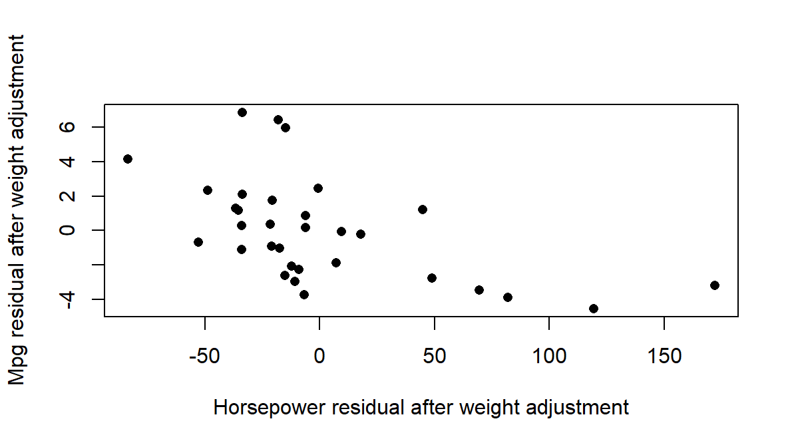
plot(resid_hp, resid_mpg)Both routes give \(-.547\): the mpg–horsepower association weakens from \(-.7762\) once each variable’s linear relationship with weight is removed, and a negative association remains (Figure 9). The adjustment uses the same 32 rows; it does not exclude heavy cars. It removes the specified linear relationships and nothing more: not all confounding, omitted nonlinear relationships or measurement problems, and it does not establish a causal effect of horsepower.
Section 5.6 supplies the test when this partial coefficient is the preselected question. Linear adjustment keeps the same cases; restricting the analysis to lighter cars would instead change the records, and the two operations need not yield the same relationship.
Sampling Variation and Standard Errors
A population, a sample, and a target
Section 1 distinguished the recorded days from a wider population. A population inference now needs the process by which its observations were selected. Filtering recorded values in R describes which observations enter a particular calculation; it supplies no random sampling mechanism. The invented school system, with 20,000 students in schools of different types, gives a compact reminder:
| Scheme | Selection from the school system |
|---|---|
| Simple random sampling | Every set of 100 students from the register has the same chance. |
| Systematic sampling | Choose a random start, then every 200th student; the ordering of the list matters. |
| Stratified random sampling | Select a probability sample within every school-type stratum. |
| Cluster sampling | Randomly select schools and include their eligible students. |
| Multistage sampling | Randomly select schools, then students within those schools. |
Probability sampling gives eligible units known nonzero inclusion probabilities, which need not be equal. An open invitation, convenience recruitment or quotas alone do not supply those probabilities, and frame coverage and nonresponse still matter after probability selection. A simple random sample of 100 from the register gives each student inclusion probability \(100/20{,}000=.005\). Sampling strata concern selection, whereas blocks concern allocation of conditions; cluster sampling and the assignment of whole clusters are different design decisions, even when both produce records grouped within schools. General unequal-probability estimation and the SEs for all survey designs extend beyond the methods developed here.
sample(1:20000, size = 100)An estimand names the quantity the question targets; an estimator is the rule applied to a possible sample, and an estimate its realized value. A sampling distribution requires a specified repetition, not simply a numerical result. We now change the generating process: instead of selecting from a fixed population, R generates independent observations from a probability distribution whose parameters we choose. Let the model be Normal with mean 50 and SD 10, and generate 30 draws:
set.seed(60506)
one_sample <- rnorm(30, mean = 50, sd = 10)
c(mean = mean(one_sample), SD = sd(one_sample))
#> mean SD
#> 49.569126166 7.005104058rnorm() takes the number of observations, the model mean and the model SD; the result is one sample from that model.
| Quantity | Model value (parameter) | This sample (statistic) |
|---|---|---|
| Mean | \(\mu=50\) | \(\bar x=49.5691\) |
| SD | \(\sigma=10\) | \(s=7.0051\) |
The parameters are fixed features of the model; the statistics are calculated from the generated observations and vary with the draws. Running rnorm() again without resetting the seed gives another sample and generally different statistics, while resetting the seed recreates the same draws. A seed controls the repeatability of the numerical experiment; it supplies no evidence that the Normal model describes a real study. Nor does knowing the generating SD in a simulation make a sample SD a known population SD in an actual study.
A simulation gives us a known target, but a study usually has a target we cannot observe directly. An invented special-practice study used complete random assignment of 120 participants, exactly 60 to Special Practice and 60 to Usual Practice, and measured delayed-assessment scores; the group means were 27.1 and 24.0 points, with SDs 6.0 and 6.4. The estimand is the mean effect of assignment to Special rather than Usual Practice among these 120 participants. Write \(Y_{i1}\) for participant \(i\)’s potential score under Special assignment and \(Y_{i0}\) for the score under Usual assignment. The target is
\[ \Delta\mu=\frac{1}{n}\sum_{i=1}^{n}\{Y_{i1}-Y_{i0}\}, \]
where the braces hold one participant’s effect and division by \(n=120\) takes the mean over the 120 assigned participants. Each participant reveals only the outcome under the assigned condition, so no individual effect is ever recorded and the effects cannot simply be averaged. The estimator, the difference in assigned-group means \(\widehat{\Delta\mu}=\bar y_1-\bar y_0\), uses the observed outcomes; estimation applies that rule and checks its inputs; the estimate is the resulting \(27.1-24.0=3.1\) points. The repetition behind its uncertainty reassigns the same 120 participants, exactly 60 to each condition: the participants and their potential outcomes stay fixed while the assigned groups and observed outcomes vary. That differs from repeatedly sampling new people.
| Object | Working definition | In the special-practice study | In R |
|---|---|---|---|
| Estimand | The precisely specified quantity the question seeks | Mean delayed-score difference caused by Special rather than Usual assignment among the 120 participants | Not an object; stated in words before any code |
| Estimator | The rule applied in each admissible repetition | Special-group mean minus Usual-group mean | An expression such as mean_special - mean_usual |
| Estimate | The number the estimator produced | \(27.1-24.0=3.1\) points | The value that expression returns |
| Statistic | A numerical function of observed data | A group mean, the 3.1-point estimate | Any computed summary |
| Parameter | A fixed feature named by the estimand under the chosen interpretation | The participant-specific mean assignment contrast | Unknown here; Section 4.4 changes the target to a known waiting-time variance |
| Standard error | The modelled spread of the estimator across the declared repetitions | 1.1325 points (Section 4.5) | Computed from the group SDs and counts |
Table 13 separates the scientific target from its computational representation. Storing a result in an object named estimate does not define its estimand; that definition comes from the question, the participants, the comparison and the outcome.
The first repeated-sample calculation
Consider independent exponential waits with mean and SD both 10 minutes, many short and a few long. R’s rexp() uses the rate, the reciprocal of the mean, so rate = 1 / 10 gives a ten-minute mean. One call repeats the whole sampling operation, drawing five waits and averaging them, 5,000 times:
set.seed(60203)
means_5 <- replicate(5000, mean(rexp(5, rate = 1 / 10)))
c(mean = mean(means_5), SE = sd(means_5))
#> mean SE
#> 10.014145149 4.539459458replicate() evaluates its second argument repeatedly and collects the results, so means_5 holds 5,000 sample means, not 5,000 individual waits. Their mean, 10.0141 minutes, lies close to the model mean, and their SD, 4.5395 minutes, describes how much a mean of five waits varies. A statistic’s standard error is its SD across the stated repetitions. For independent observations from a common distribution with SD \(\sigma\), the mean’s model SE is
\[ SE(\bar Y)=\frac{\sigma}{\sqrt n}. \]
hist(means_5)For five waits the model SE is \(10/\sqrt5=4.4721\) minutes, and the SD of the simulated means, 4.5395 minutes, estimates it; we call that SD the empirical SE. A simulation has two sizes, and they do different jobs: the study size \(n\), the number of waits in each sample, and the number of repetitions \(B\), the number of simulated samples. Figure 10 changes one at a time.
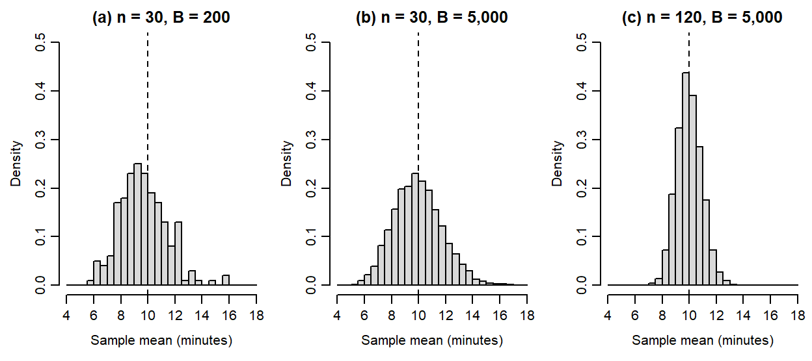
| Panel | Study size \(n\) | Repetitions \(B\) | Mean of sample means | Empirical SE | Model SE |
|---|---|---|---|---|---|
| (a) | 30 | 200 | 9.6698 | 1.7484 | 1.8257 |
| (b) | 30 | 5,000 | 9.9626 | 1.7878 | 1.8257 |
| (c) | 120 | 5,000 | 9.9922 | 0.9214 | 0.9129 |
Each run starts at seed 60203 and first generates the 5,000 means of five waits shown above. The next 5,000 samples contain 30 waits for panels (a)–(b), or 120 waits for panel (c); panel (a) uses the first 200 of panel (b)’s means. The two study sizes therefore use the same starting random-number sequence after the five-wait draws. The seed and the order together identify the reported simulation.
From panel (a) to panel (b) only the number of repetitions changes. The histogram becomes smoother and its empirical SE settles near the model SE \(10/\sqrt{30}=1.8257\) minutes, which has not changed: more repetitions show the same sampling distribution more steadily. From panel (b) to panel (c) the study size quadruples, so the model SE halves to \(10/\sqrt{120}=0.9129\) minutes and the histogram narrows. The density scale makes each bar’s area the fraction of generated means in its interval, so the three panels are directly comparable. With finitely many repetitions, an empirical SE need not equal its model value exactly.
Keep three quantities distinct. The 10-minute SD describes individual waits. The SE describes how sample means vary at a stated study size. A particular sample’s error, such as \(11.3-10=1.3\) minutes for an illustrative mean of 11.3, is one realized departure from the target; an SE summarizes the distribution of possible estimates and does not reveal the error of a particular one. Halving an SE under this model takes four times as many observations.
Concentration and sampling shape
Two results explain the changing distributions of sample means. The law of large numbers concerns concentration: under its conditions, larger samples make the mean more likely to lie close to the population mean. The central limit theorem concerns shape: under conditions such as independent, identically distributed observations with finite variance, the centred and scaled sample mean approaches a Normal distribution. A running mean shows the first idea along one sequence of draws: after draw \(k\), average the first \(k\) waits.
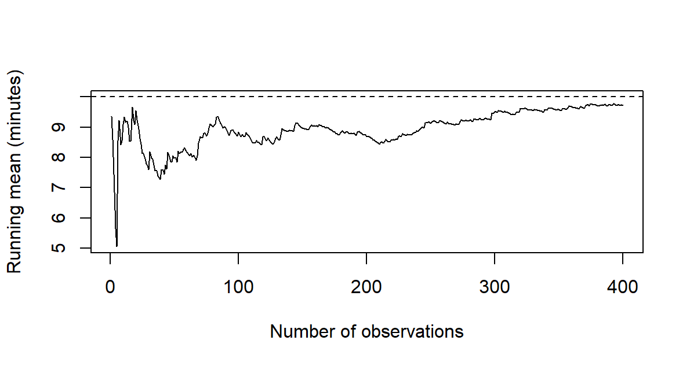
set.seed(60204)
waits <- rexp(400, rate = 1 / 10)
plot(cumsum(waits) / seq_along(waits), type = "l")The running means are 9.0830 minutes after 10 draws, 7.9852 after 50, 8.8373 after 100 and 9.7207 after 400. The path is irregular: adding observations can move the mean farther from 10 for a while. Concentration is a probabilistic statement as the sample grows, not a promise of steady improvement along one sequence or a guarantee at a particular size.
hist(means_5, probability = TRUE)
curve(dexp(x, rate = 1 / 10), add = TRUE)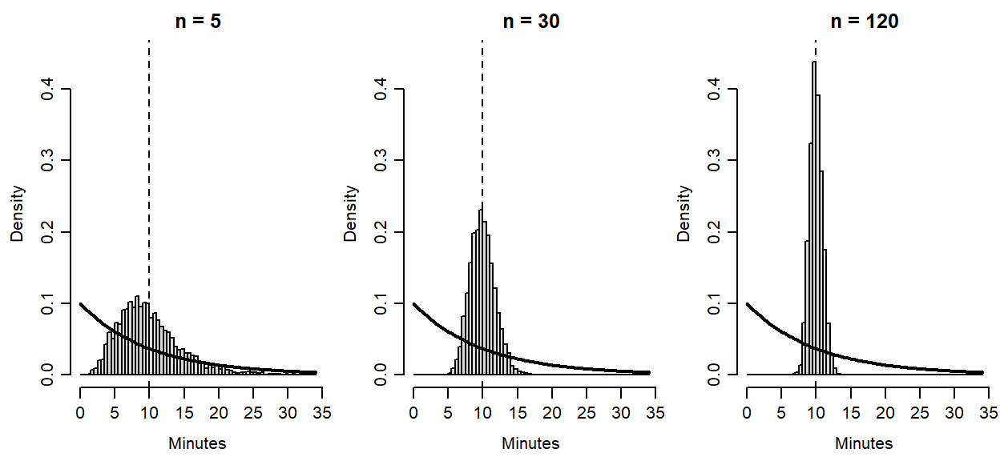
This extends Chapter 2’s waiting-time example using 5, 30 and 120 waits, so the larger study is the same one compared in Section 4.2. The histograms of Figure 12 change shape as well as width: means of larger samples become more nearly symmetric, although individual waits keep their exponential distribution. Concentration describes closeness to the target; the central limit theorem describes the sampling shape after centring and scaling. Neither makes individual observations Normal. Strong dependence, extreme tails or a dominating observation can make a familiar approximation poor, and there is no universal sample-size cutoff.
Bias and precision
An estimator’s expectation is its probability-weighted average across the declared repetitions, and its bias is that expectation minus the target. An estimator averaging 3.4 when the target is 3 has bias 0.4. Precision concerns how tightly the possible values cluster: an estimator can be centred correctly and still vary widely from one sample to the next.
To compare the two variance divisors, change the target to the variance of the waiting-time process, 100 squared minutes. For each of 5,000 independent samples of five waits, compute one variance with divisor \(n-1\) and one with divisor \(n\). The second is always four-fifths of the first for samples of five; Table 15 reports their averages.
| Variance rule | Mean over 5,000 samples | Expectation under the model |
|---|---|---|
| Divide by \(n-1\) | 101.2241 | 100 |
| Divide by \(n\) | 80.9793 | 80 |
set.seed(60501)
variance_n1 <- replicate(5000, var(rexp(5, rate = 1 / 10)))
c(mean(variance_n1), mean(variance_n1 * 4 / 5))The expectations in the last column follow from
\[ \operatorname{Bias}(\widehat\theta)=E(\widehat\theta)-\theta,\qquad E(s^2)=\sigma^2,\qquad E\left\{\frac{1}{n}\sum_{i=1}^{n}(X_i-\bar X)^2\right\}=\frac{n-1}{n}\sigma^2. \]
The \(n-1\) rule is unbiased under the independent common-distribution model; the \(n\) rule has downward bias \(\sigma^2/n=20\) squared minutes here. The simulation average 101.2241 can differ from 100 even for the unbiased rule, because 5,000 samples approximate the expectation rather than enumerating every possible sample. Both rules can be far from 100 in a single sample. The \(n\) estimate is always four-fifths of the \(n-1\) estimate here, so it varies less across repetitions while being centred on the wrong value: an apparently stable estimate can systematically miss its target, which is why precision and bias are reported separately.
SE follows the unit and the comparison
An SE follows the observational units that can vary independently. The sleep documentation describes extra hours of sleep, relative to a control period, under two drugs for ten people. ID identifies a person, group a drug and extra the extra hours; negative values mean less sleep than under control. Twenty measurement rows therefore represent ten people, and alignment by person comes before subtraction:
sleep_wide <- reshape(sleep, idvar = "ID", timevar = "group",
direction = "wide")
sleep_d <- sleep_wide$extra.2 - sleep_wide$extra.1
c(mean = mean(sleep_d), SD = sd(sleep_d),
SE = sd(sleep_d) / sqrt(length(sleep_d)))
#> mean SD SE
#> 1.5800000000 1.2299954833 0.3889587239Each person’s two measurements occupy one row, as extra.1 and extra.2. A valid pair matches the same person in both conditions. The subtraction is drug 2 minus drug 1. The ten differences have mean 1.58 hours and SD 1.23 hours, and because the same people enter both conditions, the mean difference equals the difference of the condition means, \(2.33-0.75=1.58\). Their variance keeps the pairing:
\[ s_d^2=s_2^2+s_1^2-2s_{12}, \]
where \(s_{12}\) is the covariance of the two measurements. Table 16 sets the two possible SE calculations for the same ten people side by side.
| Calculation for the ten people | Variance used | SE of the mean difference (hours) |
|---|---|---|
| Paired: the ten within-person differences | \(s_d^2=1.5129\) | 0.3890 |
| As if the two conditions were independent groups | \(s_1^2+s_2^2=3.2006+4.0090\) | 0.8491 |
sd(sleep_d) / sqrt(length(sleep_d))
sqrt((var(sleep_wide$extra.1) + var(sleep_wide$extra.2)) / 10)The covariance of the two measurements is positive, 2.8483: people who gain more sleep under one drug tend to gain more under the other. The paired calculation removes that shared variation; the independent-groups calculation leaves it in and more than doubles the SE. The number of people is ten in both rows, so the variance calculation, not the count, is what changed.
For a single mean of independent observations from a common process, the sample SD estimates the process SD and the estimated SE is \(\widehat{SE}(\bar Y)=s/\sqrt n\). For the 116 ozone values it is \(32.9879/\sqrt{116}=3.0628\) ppb, under a working assumption of independent observations from a common process. The historical daily record does not establish that assumption: nearby days could be related and the process could change over the summer. The formula returns a number; its inferential use needs a justification for the model and the target.
For two independent groups, each mean contributes its own variance term. The special-practice summaries give
\[ \widehat{SE}(\bar y_1-\bar y_0)=\sqrt{\frac{6.0^2}{60}+\frac{6.4^2}{60}} =1.1325\text{ points}. \]
With 60 participants in each group, this also equals the pooled SE. Its interpretation in this fixed-participant assignment study differs from independent sampling. Exactly 60 of the 120 participants are assigned to each group, so the two assigned-group means are dependent, and the exact assignment variance subtracts a term for variation in individual assignment effects, which the observed outcomes cannot recover. The squared SE above omits that term and estimates an upper bound on the assignment variance on average; it need not exceed the true variance in every realized study. A t reference adds an approximate calibration to this variance estimate.
Two other design consequences follow the same principle. If schools are independent blocks, uncertainty follows their contrasts rather than the student identifiers within them. Sampling without replacement from a finite register changes uncertainty through the sampling fraction. Across these settings, the estimand, dependence and design decide the uncertainty calculation; row counts alone cannot.
Intervals and Tests for Means and Correlations
Estimate, SE, critical value, and interval
An estimate answers a numerical question; an interval describes uncertainty about its target under a stated procedure. Before asking R for either, name the outcome and its units, the included observations, the parameter and the repetition that makes an SE meaningful: the model and design determine the calculation, and a function’s default cannot supply them. The common construction is
\[ \text{interval}=\widehat\theta\pm c^* \widehat{\operatorname{SE}}(\widehat\theta),\qquad T=\frac{\widehat\theta-\theta_0} {\widehat{\operatorname{SE}}(\widehat\theta)}. \]
The estimate and SE have outcome units. Multiplying the SE by the critical value \(c^*\) gives a margin in those units, and the test statistic expresses the departure from a null value \(\theta_0\) in SE units. The confidence level, the tail convention and the reference distribution determine the critical value and the p-value.
For a mean of independent Normal observations whose SD \(\sigma\) is stipulated independently, the SE is \(\sigma/\sqrt n\) and the statistic has a standard Normal reference. When the SD is estimated from the same observations, the SE is \(s/\sqrt n\) and the reference is t with \(n-1\) df, whose heavier tails reflect the uncertainty of the estimated scale (Student, 1908). The critical values that leave .025 in the upper tail show the difference:
c(z = qnorm(.975), t5 = qt(.975, df = 5), t9 = qt(.975, df = 9),
t30 = qt(.975, df = 30))
#> z t5 t9 t30
#> 1.959963985 2.570581836 2.262157163 2.042272456The multipliers are 1.96 for the Normal reference and 2.5706, 2.2622 and 2.0423 for t with 5, 9 and 30 df. A large sample makes the two references similar; it does not make an estimated SD a known one.
The 32 recorded car models have mean fuel economy 20.0906 mpg. Take the null process mean to be 20 mpg and let R run the one-sample t procedure:
t.test(mtcars$mpg, mu = 20)
#>
#> One Sample t-test
#>
#> data: mtcars$mpg
#> t = 0.085060036, df = 31, p-value = 0.9327606
#> alternative hypothesis: true mean is not equal to 20
#> 95 percent confidence interval:
#> 17.91767851 22.26357149
#> sample estimates:
#> mean of x
#> 20.090625The printout names the method, gives the statistic with its df and the p-value, states the two-sided alternative, and reports the 95% interval and the estimated mean. Suppose, as a second and explicitly different working assumption, that the process SD were known independently to be 5 mpg; this teaching value is not an estimate from mtcars. Table 17 sets the two procedures side by side.
| Procedure | SE | Statistic | df | Two-sided p | 95% interval |
|---|---|---|---|---|---|
| Known-SD z, \(\sigma=5\) | 0.8839 | 0.1025 | – | .9183 | [18.3582, 21.8230] |
| Estimated-SD t | 1.0654 | 0.0851 | 31 | .9328 | [17.9177, 22.2636] |
mean(mtcars$mpg) + c(-1, 1) * qnorm(.975) * 5 / sqrt(32)The t row uses the observed SD, 6.0269, and the critical value 2.0395. Both its SE and its multiplier exceed those of the known-SD row, so its interval is wider. Both intervals contain 20 mpg, matching their tests’ failure to reject that null at .05; this matching holds when interval and test share a method, assumptions and calibration. A p-value is a tail probability under the null and those conditions, not the probability that the null is true, and including 20 establishes neither exact equality nor practical equivalence. An interval for a process mean also differs from a range containing 95% of individual cars. These calculations illustrate working process models: the historical collection of car models does not become a probability sample when t.test() runs, and a broader inference needs a supported target process with appropriate dependence and distribution conditions.
Supplied summaries and a planned direction
An invented district study supplies only summaries: \(n=25\), mean 52 and sample SD 5 under independent Normal sampling. They are enough, so we use them directly rather than inventing observations to pass into t.test(). For the null mean 50, the estimated SE is \(5/\sqrt{25}=1\) and the statistic is \(t=(52-50)/1=2\) on 24 df. pt() turns the statistic into tail areas:
c(two_sided = 2 * pt(2, df = 24, lower.tail = FALSE),
upper = pt(2, df = 24, lower.tail = FALSE))
#> two_sided upper
#> 0.05693984994 0.02846992497The two-sided p-value is .0569; the upper-tail p-value for the alternative \(\mu>50\) is .0285. They differ because they answer different questions, and a directional alternative must come from the question before the result is seen. Had the planned alternative been \(\mu<50\), the same statistic would give lower-tail \(p=.9715\), above .5; halving a two-sided p-value blindly can therefore report the wrong tail. The two-sided 95% interval is [49.9361, 54.0639], using R’s critical value 2.0639, and it contains 50, consistent with the two-sided test; the upper-tail test does not correspond to that interval. The rounded t-table value 2.064 gives [49.936, 54.064]; a task that stipulates that rounded critical value keeps those endpoints. The difference is rounding, not a changed conclusion.
Paired observations and complete pairs
The sleep measurements return us to a comparison whose unit is a person: ten complete pairs, not twenty independent people. Their condition means are 0.75 and 2.33 hours, and the mean of their aligned differences is 1.58 hours. Nine differences are positive and one is zero, ranging from 0 to 4.6 hours.
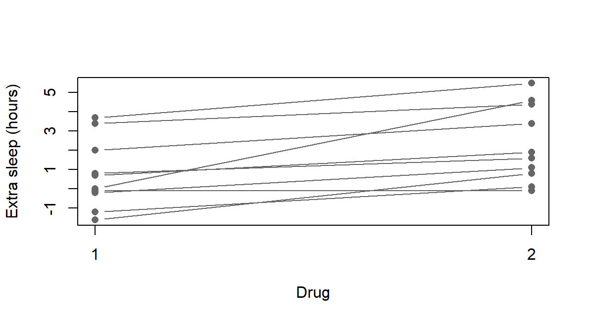
The inferential target is a process mean difference \(\mu_D\). Under a working model of independent Normal differences between people, \(s_d/\sqrt n\) estimates the SE of their mean and the t reference has \(n-1\) df. Normality concerns the differences, and the dependence between one person’s two measurements is kept in the difference, as Figure 13 shows line by line. The argument paired = TRUE tells R to subtract measurements at corresponding positions, which the ID-based reshaping of Section 4.5 made correct:
t.test(sleep_wide$extra.2, sleep_wide$extra.1, paired = TRUE)
#>
#> Paired t-test
#>
#> data: sleep_wide$extra.2 and sleep_wide$extra.1
#> t = 4.0621277, df = 9, p-value = 0.00283289
#> alternative hypothesis: true mean difference is not equal to 0
#> 95 percent confidence interval:
#> 0.7001142367 2.4598857633
#> sample estimates:
#> mean difference
#> 1.58The output gives \(t(9)=4.0621\), \(p=.0028\) and the 95% interval [0.7001, 2.4599] hours around the mean difference 1.58. A paired t calculation is a one-sample t calculation on the within-person differences, so the same result follows from t.test(sleep_d). Raising the confidence to 99% widens the interval to [0.3159, 2.8441] while the observations and the estimate stay the same.
With missing measurements, keep the rows that have both values before forming differences; removing missing entries separately from each column could align different people. Complete-pair analysis also changes who contributes and may need a missingness justification: a software exclusion is not that justification. The interval concerns a process mean, not a guarantee of benefit for every person, and ten differences give limited protection against non-Normal tails or influential cases. Neither the paired call nor the dataset establishes random sampling, treatment order, absence of carryover or the other conditions needed for a causal interpretation.
Two independent groups and Welch’s method
Now compare separate automatic and manual car models. Let \(\Delta\mu=\mu_A-\mu_M\) be the automatic-minus-manual process mean mpg difference. Under an independent-groups working model the two means contribute separate variance terms. Welch’s method estimates both and allows the group variances to differ (Welch, 1947). With \(a=s_A^2/n_A\) and \(b=s_M^2/n_M\),
\[ \widehat{\Delta\mu}=\bar y_A-\bar y_M,\qquad \widehat{\operatorname{SE}}=\sqrt{a+b},\qquad \nu=\frac{(a+b)^2}{a^2/(n_A-1)+b^2/(n_M-1)}. \]
The Welch–Satterthwaite df \(\nu\) account approximately for the two estimated variance terms and need not be an integer. Extracting the two groups in a stated order makes the subtraction unambiguous:
auto <- mtcars$mpg[mtcars$am == 0]
manual <- mtcars$mpg[mtcars$am == 1]
t.test(auto, manual)
#>
#> Welch Two Sample t-test
#>
#> data: auto and manual
#> t = -3.7671231, df = 18.332252, p-value = 0.001373638
#> alternative hypothesis: true difference in means is not equal to 0
#> 95 percent confidence interval:
#> -11.280194355 -3.209684187
#> sample estimates:
#> mean of x mean of y
#> 17.14736842 24.39230769The 19 automatic and 13 manual models have means 17.1474 and 24.3923 mpg, a difference of \(-7.2449\) mpg. The output reports \(t=-3.7671\) on \(\nu=18.3323\) df, \(p=.0014\) and the 95% interval [\(-11.2802\), \(-3.2097\)]. The negative sign describes the declared order; reversing it would negate the estimate and exchange the negated endpoints, with the same two-sided p-value. R’s two-sample t.test() uses Welch’s test by default, and var.equal = TRUE gives the equal-variance (pooled) test, which adds a common-variance assumption. Table 18 compares the two on the same records.
| Procedure | SE | df | Two-sided p | 95% interval |
|---|---|---|---|---|
| Welch’s unequal-variance t | 1.9232 | 18.3323 | .0014 | [\(-11.2802\), \(-3.2097\)] |
| Equal-variance (pooled) t | 1.7644 | 30 | .0003 | [\(-10.8484\), \(-3.6415\)] |
t.test(auto, manual, var.equal = TRUE)The estimate and the observations are unchanged; the variance assumption and the calibration differ. The equal-variance t reference is exact for independent Normal groups with a common variance, whereas Welch’s reference remains approximate even for independent Normal groups with unequal variances. The choice comes from the design and subject knowledge before the analysis: a smaller p-value, or a preliminary variance test, is not a reason to adopt the common-variance assumption. Neither method resolves the differences in weight, engine and other features that accompany transmission, so these observational comparisons do not isolate a transmission effect.
Coverage belongs to the procedure
What makes an interval procedure a 95% procedure? A known process lets us see. Let independent differences be Normal with mean 1.5 hours and SD 1.2 hours; these are teaching constants, not a reconstruction of the sleep study. Each repeated study draws fresh differences, estimates their mean and SE, and forms a 95% t interval; recalculating one interval on the same observations would reproduce that interval, not test the procedure. Before looking at Figure 14, predict what will change when each study grows from 10 to 40 observations: the interval widths, the procedure’s nominal coverage, or both?
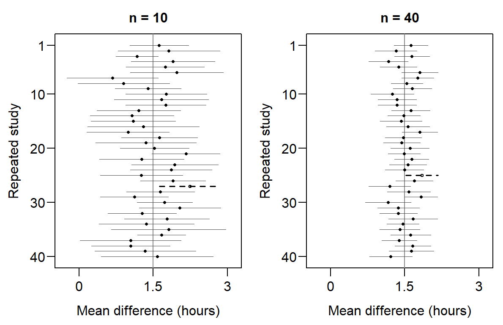
set.seed(60610)
y <- rnorm(10, mean = 1.5, sd = 1.2)
t.test(y)$conf.intFresh data move the means, and each study’s estimated SD also changes its interval width. With 40 observations the intervals are generally narrower, while the same 95% procedure is used. Under this Normal model its coverage is exactly .95 at either size. The 39 of 40 intervals that cover in each panel are this small simulation’s outcome; a collection of 40 need not contain exactly 38 covering intervals. For any one observed interval, the fixed mean lies inside or outside its endpoints.
Repeating the calculation for 2,000 studies at each of three sample sizes estimates coverage more stably (Table 19).
| n | Mean of estimates | Empirical SE | Model SE | Coverage |
|---|---|---|---|---|
| 10 | 1.5015 | 0.3766 | 0.3795 | .9515 |
| 20 | 1.5006 | 0.2591 | 0.2683 | .9510 |
| 40 | 1.5014 | 0.1886 | 0.1897 | .9460 |
The empirical SE is the SD of the generated means and the model SE is \(1.2/\sqrt n\); coverage is the fraction of generated intervals that contain 1.5. Under the declared Normal model the t procedure has exact 95% coverage, so the simulated fractions differ from .95 only through the finite number of studies. That numerical uncertainty has its own Monte Carlo SE: each study’s coverage indicator is a Bernoulli outcome, so its mean is a proportion as in Section 2.3, and at coverage .95 with \(B=2000\),
\[ \operatorname{MCSE}(\widehat p_{\mathrm{cover}}) =\sqrt{\frac{.95(.05)}{2000}}=0.0049. \]
All three fractions lie within one MCSE of .95. Increasing \(B\) reduces the simulation noise, quadrupling it halves the MCSE. Increasing \(n\) supplies more information in each study and narrows the intervals, from 10 to 40 halving the model SE, without raising the nominal 95% coverage above 95%. The individual-difference SD, the mean’s SE and the simulation’s MCSE describe different sources of variation. For one observed interval the parameter is inside or outside; the 95% describes repeated use of the procedure.
A selected correlation test
The descriptive weight–mpg correlation concerns the recorded models. Inference adds a target process correlation \(\rho\) and a supporting model. Suppose we selected the two-sided null \(H_0:\rho=0\) before examining the result, with level \(\alpha=.05\). Under independent bivariate-Normal sampling the zero-correlation statistic
\[ t=r\sqrt{\frac{n-2}{1-r^2}},\qquad df=n-2, \]
has an exact \(t_{n-2}\) reference. One call carries out the test on the same 32 pairs:
cor.test(mtcars$wt, mtcars$mpg)
#>
#> Pearson's product-moment correlation
#>
#> data: mtcars$wt and mtcars$mpg
#> t = -9.5590441, df = 30, p-value = 1.293959e-10
#> alternative hypothesis: true correlation is not equal to 0
#> 95 percent confidence interval:
#> -0.9338264133 -0.7440871965
#> sample estimates:
#> cor
#> -0.8676593765The output gives \(r=-.8677\), \(t(30)=-9.559\) and a p-value so small that R prints it in scientific notation, \(p<.0001\). The result is evidence against zero process correlation under the stated reference model; a small p-value does not establish that model or turn the historical car records into a probability sample. Normality is not needed to calculate the descriptive \(r\), whereas independence, form, influential cases and the observed range matter for inference.
The printed 95% interval, [\(-.9338\), \(-.7441\)], uses Fisher’s transformation, a different approximation from the exact zero-null test:
\[ CI_\rho=\tanh\left\{\operatorname{atanh}(r) \pm\frac{z_{.975}}{\sqrt{n-3}}\right\}. \]
r_wt <- cor(mtcars$wt, mtcars$mpg)
tanh(atanh(r_wt) + c(-1, 1) * qnorm(.975) / sqrt(32 - 3))Why transform? Figure 15 simulates 5,000 studies of 32 pairs whose process correlation is \(-.8677\).
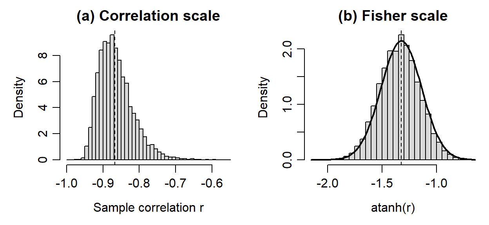
Near \(-1\) the sample correlations are squeezed against the bound and trail off toward zero, so a margin of equal size on both sides of \(r\) would misplace the interval. On the Fisher scale the same values are nearly Normal, with SD 0.1831 against the model’s \(1/\sqrt{29}=0.1857\). The interval is therefore built there and both endpoints are transformed back, which makes it asymmetric about \(r\): it extends 0.0662 below \(-.8677\) and 0.1236 above. The interval needs at least four complete pairs and remains approximate even under bivariate Normality, and substantial nonlinearity can make linear correlation a poor answer to the substantive question whatever the interval’s width.
If the partial coefficient is the preselected inferential question, the reference must account for fitting the control. With \(k\) controls and \(n\) common observations the classical statistic is
\[ t=r_{XY\cdot Z}\sqrt{\frac{n-k-2}{1-r_{XY\cdot Z}^{\,2}}},\qquad df=n-k-2, \]
which here gives \(t=-3.5187\) on 29 df, \(p=.0015\). This exact classical calibration requires independent observations, full-rank linear adjustment and a Normal conditional-error model, or a multivariate Normal model. Applying an ordinary cor.test() to the two residual vectors would use \(n-2=30\) df and ignore the fitted control.
r_partial <- cor(resid_mpg, resid_hp)
t_partial <- r_partial * sqrt(29 / (1 - r_partial^2))
2 * pt(abs(t_partial), df = 29, lower.tail = FALSE)The rank coefficients of Section 3.3 have their own tests, reporting Spearman’s S or Kendall’s z, using exact = FALSE with tied values, and supplying no Fisher interval. A preselected question supports one test. Choosing whichever method gives the smallest p-value or reporting a matrix of unplanned tests creates a comparison family that needs calibration for the choices made.
The point-biserial test of Section 3.3’s .5998 gives \(t(30)=4.1061\), \(p=.0003\), the statistic of Section 5.4’s equal-variance two-sample t with manual first, under independent, conditionally Normal outcomes and a common variance; it generally differs from Welch’s test. The equivalence concerns that common-variance model; it does not select the appropriate assumptions for the study.
Report the Study
Connect the question, methods and results
A study report lets readers follow a question through the evidence used to answer it. Explain what was recorded, how the observations were obtained, which comparison addresses the question, and why the analysis is appropriate. Then present the results and explain their implications and limitations. The code and its output support this account; readers also need the study information that gives the numbers their meaning.
For the sleep example, the question concerns the difference in extra sleep between two drugs. The outcome is measured in hours, and ten people each supply two measurements. This design makes the within-person difference, drug 2 minus drug 1, the relevant comparison. The analysis states its model for those differences; the report also identifies missing information about assignment, treatment order and carryover. Within that account, the result paragraph can read:
For the ten recorded people, extra sleep under drug 2 averaged 1.58 hours more than under drug 1. The SD of the ten within-person differences was 1.23 hours. Under an independent Normal-differences working model, the mean difference has SE 0.389 hours and a 95% t interval of [0.7001, 2.4599] hours (\(t(9)=4.0621\), two-sided \(p=.0028\)). This uncertainty concerns the stated process mean. A causal account also requires information about treatment assignment, order and carryover.
The first two sentences describe the recorded people. The next adds model-based uncertainty for a named target, rather than a range of individual responses. The final sentence identifies the information a causal claim would need. A successful computation supplies the result; the study setting supplies the argument for using it (Peng, 2011).
Use Quarto to connect the study and its source
A saved script records calculations. For reporting the study, Quarto offers a practical way to bring explanatory prose, mathematical equations, R code, computed values, tables, figures, citations and a reference list together in one editable source (Posit Software, PBC, 2026). Rendering turns that source into a document for readers and can run its R code to produce the results. The source therefore records how a reported number or figure was obtained alongside the explanation of what it means.
| Output | Use in communicating a study |
|---|---|
| HTML | A report read in a browser, with links and navigation. |
| PDF report | A professionally typeset document for reading, printing or submission. |
| PDF presentation (Beamer) | Slides that select the study’s main question, evidence and conclusions for a talk. |
The same calculations, equations and figures can support each format. A presentation still needs its content selected and organized for slides: changing the output format alone does not decide what an audience should see or how much it can read at once.
For the paired analysis, the same observations and subtraction direction produce the estimate and interval quoted above. A change in the confidence level from .95 to .99 widens the interval from [0.7001, 2.4599] to [0.3159, 2.8441] hours, while the estimate stays 1.58. The report must change its confidence statement as well as its numbers. A reproducible source makes that connection inspectable; automation cannot decide whether the interpretation remains appropriate.
When a data-selection rule or a method changes, rerunning the source updates the computed values; the interpretation still needs to be reread. A reproducible report keeps question, data, code, output and explanation consistent. Rendering shows that a document can be produced, while the evidence and reasoning determine what its claims establish.
Reading Bridge
When a study reports a mean, interval or association, identify what was recorded, which observations entered the calculation, the statistic or comparison and its units. Next locate the repetition or model that supports the SE, reference distribution, interval or test. Finally separate the numerical result from the assumptions needed for population, practical or causal claims. R reproduces a computation; the study’s evidence and design support its interpretation.
This chapter connected base-R descriptions to sampling variation, mean inference and selected correlation inference. Chapter 6 applies the same reading pattern to counts and group models, introduces a small ggplot2 plotting vocabulary, and examines fitting criteria and procedures across repetitions. Chapters 7–8 extend correlations, comparisons and linear adjustment into regression arguments.
Key terms
Use this short reference to revisit the computing, simulation and matrix terms explained here. The Part One Concept Reference gives the principal home of the descriptive and inferential terms this chapter applies.
| Term and common alternatives | Meaning |
|---|---|
| Script and Quarto source | A saved .R script records commands so an analysis can be rerun; a .qmd source connects prose, mathematics, executable code, tables, figures, and references, and renders to PDF, HTML, or Word. |
| Simulation and seed (Monte Carlo simulation) | Generating data from a declared process to see what a statistic or procedure does across repetitions. A seed makes the random draws repeatable; it does not make the process true for an actual study. |
| Monte Carlo standard error | The numerical uncertainty of a simulated probability or mean that comes from using finitely many repetitions; more repetitions shrink it. It is distinct from a study’s SE, which depends on the study’s sample size. |
| Term and common alternatives | Meaning |
|---|---|
| Covariance matrix | A square table of variances on the diagonal and covariances off the diagonal for a stated set of variables and observations. |
| Correlation matrix | A square table of pairwise correlation coefficients for a stated set of variables and observations; its diagonal is 1 for variables with positive variance. |
Further reading
R’s reference system (R Core Team, 2025) and local Help for mean, sd, quantile, t.test, cor, cov2cor and cor.test describe their arguments, defaults and computational conventions. The original papers by Student (1908) and Welch (1947) explain the classical mean procedures developed here. Quarto’s documentation (Posit Software, PBC, 2026) gives examples of executable reports, and Peng (2011) connects reproducible computation with broader scientific reporting.
Exercises
Use the stated records and each prompt’s supplied summaries. Explain the statistical meaning as well as any calculation, and report numerical results to the requested precision.
Exercise 1: Count the right observations (Foundational)
A table contains 40 students with one baseline and one follow-up row each, plus one duplicate follow-up row. There are 81 rows. Explain the difference between a row count and a student count. If four students have missing follow-up scores, give the denominator for the mean observed follow-up score after the documented duplicate is resolved. State what the mean describes.
Exercise 2: Center, spread and a changed observation (Foundational)
Section 2.1’s three recorded scores, 50, 60 and 70 points, have mean and median 60 and sample SD 10 points. Suppose the lowest score had instead been 20.
- Before calculating, predict whether the mean, the median and the SD rise, fall or stay the same, and give a reason for each.
- Calculate the new mean and sample SD (denominator \(n-1\)), reporting the SD to four decimal places. Compare this SD with the one Section 2.1 reports after 70 is replaced by 100, and explain the comparison.
- Which center would you report as a typical score, and does the low value alone justify removing it?
Exercise 3: A missing score is not zero (Foundational)
In Section 1.2, students A, B and C have baseline scores 50, 60 and 70 and follow-up scores 55, missing and 78, and the complete-pair mean change and the difference of the separate available means both equal 6.5 points. Suppose instead that B’s follow-up score is 66 and C’s is missing.
- Before calculating, predict whether the two quantities still agree and, if not, which is larger. Base the reason on which students enter each mean.
- Calculate both quantities and state each denominator.
- Explain what recording C’s missing score as 0 would claim, and why the agreement in Section 1.2 did not show that the two calculations used the same students.
Exercise 4: Choose the group denominator (Foundational)
In Section 2.3, 4 of 19 automatic and 10 of 13 manual car models meet a fuel-economy threshold: 21.0526% and 76.9231% within the transmission groups, and 71.4286% of the 14 threshold-meeting models are manual.
- A report states, “71.4286% of manual models meet the threshold.” Name the denominator the sentence implies and the one the 71.4286% uses, then correct the sentence.
- An invented second record has the same 13 manual models and 38 automatic models, 8 of which meet the threshold. Before calculating, predict which of the three percentages change, and why. Then calculate the percentage of threshold-meeting models that are manual.
Exercise 5: Read a relationship before evaluating it (Integrative)
Section 3.1 plots five paired observations, \(x=(-2,-1,0,1,2)\) and \(y=(4,1,0,1,4)\), whose covariance and Pearson correlation are both zero. Describe the scatterplot, and use the signs of the paired deviations to explain why the covariance is zero. A report says, “The correlation is zero, so the variables are unrelated.” First identify its numerical result and reported conclusion, then evaluate whether that conclusion follows. What happens to covariance and correlation if \(y\) is multiplied by 10?
Exercise 6: Report paired differences (Integrative)
Four people have condition-1 values 1, 2, 4 and 5 and corresponding condition-2 values 2, 4, 4 and 8 hours. Their condition-2-minus-condition-1 differences are 1, 2, 0 and 3 hours, with mean 1.5 hours and sample SD 1.291 hours.
- Calculate the two condition means and confirm that their difference equals the mean of the differences.
- Suppose the condition-2 values were attached to the wrong people, in the order 8, 4, 4 and 2. Before calculating anything, predict whether the mean difference and the SD of the differences change, and explain which summary depends on keeping each person’s two values together.
- Write a descriptive result that names the people, direction and units, and explain why it does not say that every person gained 1.5 hours.
Exercise 7: Simulate a sampling distribution and read its SE (Integrative)
The waiting-time simulation in Section 4.2 reports, for \(n=30\), a mean of sample means of 9.9626 and an empirical SE of 1.7878 against a model SE of 1.8257.
- Explain what one histogram bar counts and why the empirical and model SEs differ.
- Without running R, give the model SE for \(n=120\) and for \(n=480\) and explain the pattern.
- Say what changes, and what does not, if the number of repetitions is raised from 5,000 to 20,000.
- For samples of 120 waits, the table reports an empirical SE of 0.9214 minutes from 5,000 repetitions. Compare it with your model SE for \(n=120\), and explain why the two need not agree exactly.
- The running mean and the histograms of repeated sample means show different changes as sample size increases. Explain concentration toward a target and increasingly Normal standardized sampling shape, and say whether either makes individual waiting times Normal.
Exercise 8: Name the estimand, estimator, and estimate, then read the SE (Integrative)
The special-practice study assigned 60 students to each of two formats; the delayed-assessment means were 27.1 and 24.0 with SDs 6.0 and 6.4.
- State the estimand, the estimator, and the estimate in one sentence each, and name the repetition behind the uncertainty.
- Section 4.5 gives an SE of 1.1325 points. Its square estimates assignment variance after omitting the unobservable subtraction for variation in individual effects. Explain why this can overstate uncertainty on average without doing so in every realized study.
- For the ten sleep differences (SD 1.23 hours), the SE of the mean difference is 0.389 hours. Using the two condition SDs, 1.7890 and 2.0022, as if the two sets of condition measurements were independent gives 0.8491 hours instead. Explain why pairing gives the smaller SE for the same ten people.
- A separate simulation draws waits whose model variance is 100. Across 5,000 samples of five waits, variances using the \(n-1\) denominator average 101.2241 and those using \(n\) average 80.9793. Explain which rule is unbiased, why 101.2241 need not equal 100 in this finite run, and why unbiasedness does not ensure that one estimate is close to the target.
Exercise 9: An interval and its question (Foundational)
Twenty-five independent paired differences have mean 3 and SD 5, so the estimated SE of their mean is 1 and the statistic for a zero process mean is \(t=3\). Under the Normal-difference model use \(t_{.975,24}=2.064\) to calculate the 95% interval, and explain what \(t=3\) says about the observed mean. Then name the appropriate procedures for (a) the same 20 people measured twice and (b) independent groups of 20 and 25 without equal variances. State why the interval is not a range for individual differences.
Exercise 10: A selected relationship (Integrative)
Sections 3 and 5.6 analyse the common 32 rows of mpg, hp and wt. Their correlations are \(-.7762\) for mpg and hp, \(-.8677\) for mpg and wt and .6587 for hp and wt; the Spearman coefficient for mpg and hp is \(-.8947\); and cor.test() for the preselected weight–mpg question reports \(t=-9.559\) on 30 df, \(p<.0001\) and the 95% interval \([-.9338,-.7441]\).
- Explain which entries of the covariance matrix carry measurement units, and why the correlation matrix alone cannot recover the covariance matrix.
- State which association the Pearson and the Spearman coefficients for mpg and hp each describe, and use the scatterplot of mpg against horsepower in Section 3.3 to explain why the rank coefficient is larger in magnitude.
- Calculate the partial correlation of mpg and hp controlling linearly for weight from the supplied correlations, give the df of its classical test, and explain why the adjustment alone does not establish a causal effect.
- Report the preselected weight–mpg result with its estimate, interval and the conditions supporting its reference, and explain why the interval is not symmetric about \(-.8677\).
References
Peng, R. D. (2011). Reproducible research in computational science. Science, 334(6060), 1226–1227. https://doi.org/10.1126/science.1213847
Posit Software, PBC. (2026). Quarto documentation. Posit Software, PBC. https://quarto.org/docs/
R Core Team. (2025). R: A language and environment for statistical computing. R Foundation for Statistical Computing. https://www.R-project.org/
Student. (1908). The probable error of a mean. Biometrika, 6(1), 1–25. https://doi.org/10.2307/2331554
Welch, B. L. (1947). The generalization of “Student’s” problem when several different population variances are involved. Biometrika, 34(1–2), 28–35. https://doi.org/10.1093/biomet/34.1-2.28